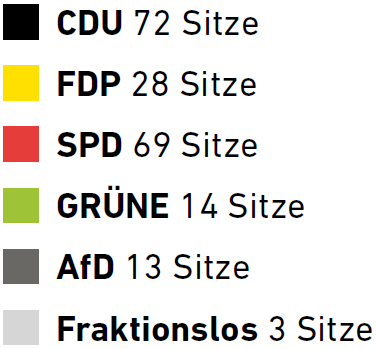
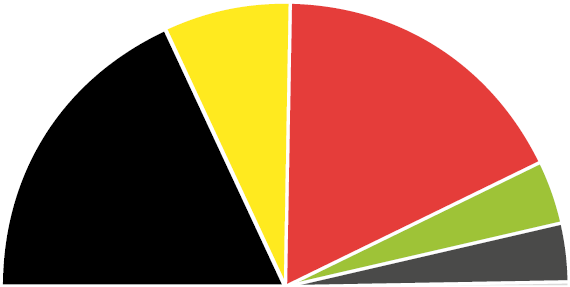

Mit einer britischen Militärverordnung hat sich im Jahr 1947 das Land Lippe mit Nordrhein- Westfalen vereinigt, das sich wiederum ein Jahr zuvor aus Rheinland und Westfalen gegründet hat. Das Bundesland ist seit 1955 durch die Zuwanderung von über vier Millionen Menschen geprägt, vorwiegend Italiener*innen wirkten dem damaligen Fachkräftemangel in der Industrie entgegen. In keinem anderen Bundesland leben so viele Menschen mit Migrationsgeschichte. Mit 17,9 Millionen Einwohner*innen ist Nordrhein- Westfalen, das an Hessen, Rheinland-Pfalz, Niedersachen, Belgien und die Niederlande angrenzt, das einwohnerstärkte Bundesland in Deutschland.
Die Schwerindustrie des Ruhrgebietes spielte für den Wiederaufbau nach dem Zweiten Weltkrieg eine bedeutende Rolle. So machte insbesondere die Kohle einen wichtigen Anteil an der Energieversorgung aus, der Bergbau war ein Jobmagnet. Die harte Arbeit und der Zusammenhalt der Bergleute hat großen Einfluss auf das kulturelle Gedächtnis der Region genommen. Im Dezember 2018 wurde die Zeche Prosper-Haniel in Bottrop, das letzte Steinkohlebergwerk in Deutschland, stillgelegt. Doch der Strukturwandel hat bereits in den 1960er Jahren begonnen. Seitdem hat sich auch der Dienstleistungssektor in Nordrhein- Westfalen verstärkt ausgeprägt. Auch weiterhin arbeitet das Land an der Umstellung von fossilen auf Erneuerbare Energien. Eine starke Energieagentur treibt diese Bemühungen voran. Die Zahlen zeigen die dringende Notwendigkeit: nur 4,8 Prozent des Primärenergieverbrauchs wurden im Jahr 2016 durch Erneuerbare Energien zur Verfügung gestellt.
| POLITIK | |
|---|---|
| Regierungsparteien | CDU und FDP |
|
Sitzverteilung  |
 |
| Datum der letzten Wahl | 14. Mai 2017 |
| Nächste Wahl | 2022 |
| Ministerpräsident | Armin Laschet (CDU) |
| Für Erneuerbare Energien zuständiges Minesterium |
Minesterium für Wirtschaft, Innovation,
Digitalisierung und Energie www.wirtschaft.nrw |
| Minister | Prof. Dr. Andreas Pinkwart (FDP) |
| LANDESINFO | |
|---|---|
| Landeshauptstadt | Düsseldorf |
| Einwohner Ende 2016 | 17.912.134 |
| Fläche (in km^2) | 34.113 |
| Anteil landwirtschaftlicher Fläche (in %) | 47,6 |
| Anteil Waldfläche (in %) | 24,9 |
| Bevölkerungsdichte (Einwohner pro km^2) | 525 |
| BIP/Kopf (in Euro) | 39.364 |